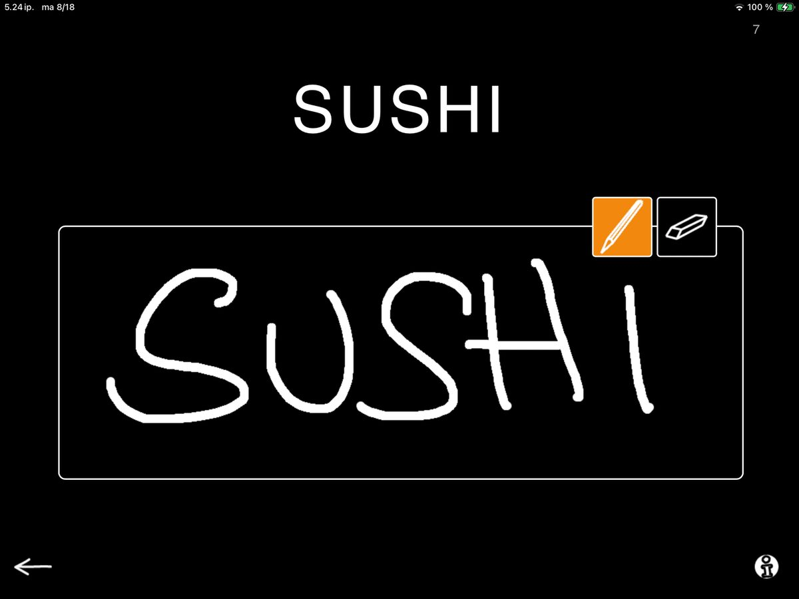
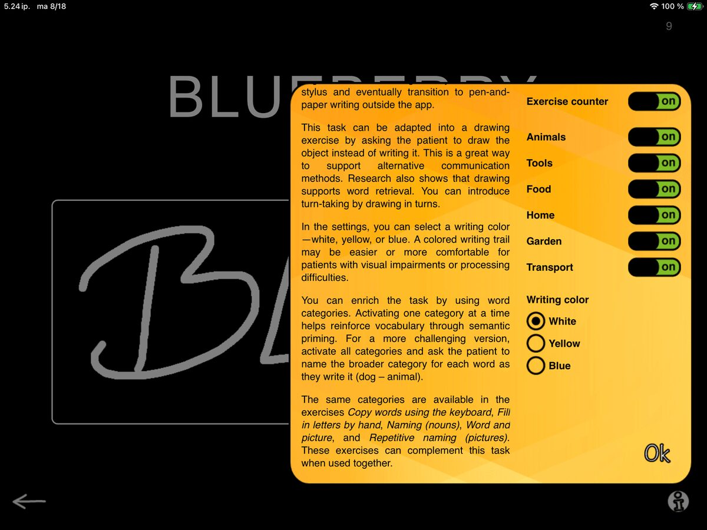

In our last post about SanapsisPro Writing category updates, we looked at Copy Letters by Hand. Today’s exercise provides a logical next step and a natural progression once the patient feels comfortable tracing individual letters. Let's take a look at Copy Words by Hand.


On screen, a word is shown above an empty box. The patient uses their finger or a stylus pen to copy the entire word into the box. The eraser tool makes it easy to start over, so multiple attempts are always possible.
This task combines visual recognition with motor execution. It can be used to retrain the physical movements required for handwriting while also reinforcing spelling patterns. For some patients, it is additionally a useful tool to address perseveration tendencies, since the word to be copied remains visible at all times for easy checking and self-correction.
In addition to writing, SanapsisPro gives you the flexibility to turn this task into a simple drawing activity. You can even make it interactive by taking turns drawing the objects that appear on screen. This can be a great addition for word retrieval and semantic processing.

The settings open up a range of categories. These categories are filled with a wide variety of everyday words: Animals, Tools, Food, Home, Garden, and Transport. Switch these categories on or off to control the topic of the task. Selecting just one category restricts words to that topic, while combining two or more categories mixes them together. It’s an easy way to tailor the exercise from focused to varied.
Beyond variety, categories add therapeutic depth. Keeping one category active reinforces semantic priming. Using two categories invites a sorting task (for example: does this word belong to Home or Transport?). For an extra challenge, turn on all categories and ask the patient to sort the words into categories as they copy the word (e.g., “dog → animal”).
You may recognize these categories from other SanapsisPro exercises such as Fill in Letters by Hand, Copy Words Using the Keyboard, Naming (Nouns), Word and Picture, and Repetitive Naming (Pictures). This shared structure helps build connections across tasks and keeps therapy both engaging and effective.